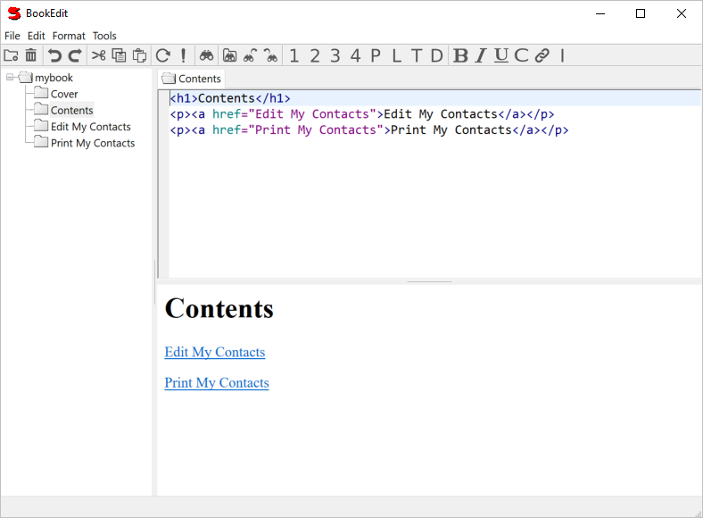

BookEdit
Used to edit application books.
Enter HTML or user interface specification code in the top right pane.
Press F5 (Refresh) to preview in the bottom right pane.

File Menu
- New Item
- Create a new page as a child of the current page.
- Delete Item
- Delete the current page.
- Import Image...
- Load an image file into the book.
- Export Single Html File...
- Export all the HTML (not program) pages from the book as a single HTML file.
The images are exported to individual files in a directory
with the same name as the file plus "(images)".
If you move the HTML file, you should move the images folder with it.
- Export Multiple Html Files...
- Export all the HTML (not program) pages from the book as individual HTML files
in a directory structure mirroring the structure of the book.
- Import Records...
- Import records from a text file created with LibIO, e.g. Export Record.
- Export Records...
- Export the current record to a text file using LibIO.
Note: This appends to the text file
so you can export several records to the same text file.
Edit Menu
- Insert File...
- Insert an HTML (text) file at the current insertion point.
Format Menu
- Bold (Ctrl+B)
- Add bold tags around the selected text.
- Italic (Ctrl+I)
- Add italic tags around the selected text.
- Code
- Add code tags around the selected text.
- Link
- Create a link to the page named by the selected text.
- Add Paragraph Tags
- Add paragraph tags on untagged blocks of text separated by blank lines.
Tools Menu
- Refresh (F5)
- Update the lower preview pane.
- Run (F9)
- Run the selected code (i.e. an example).
- Set Order...
- Bring up a dialog allowing you to set the order of an item.
The default order is alphabetic.
- Unorder Children
- Remove any order numbers applied with Set Order.